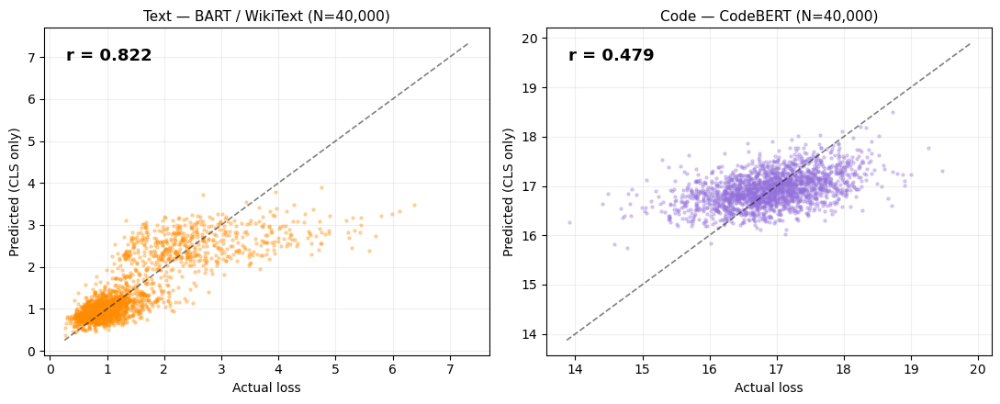
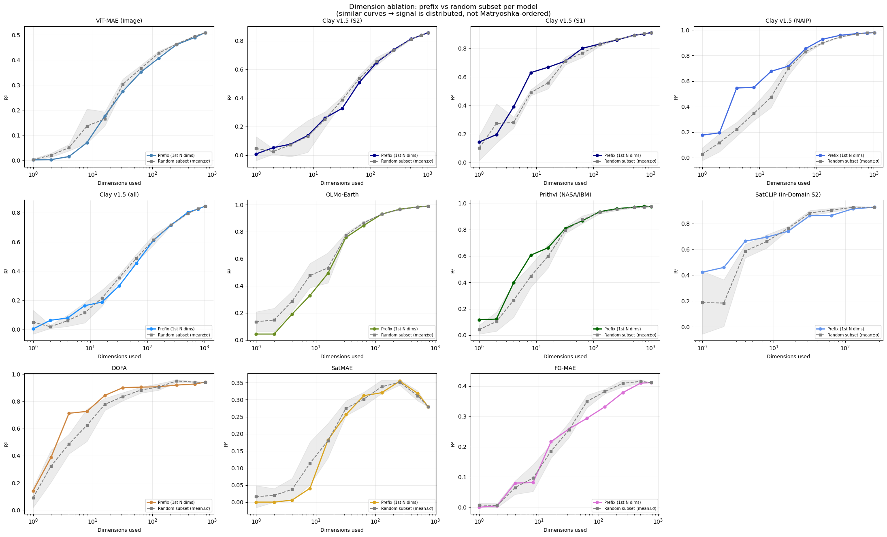
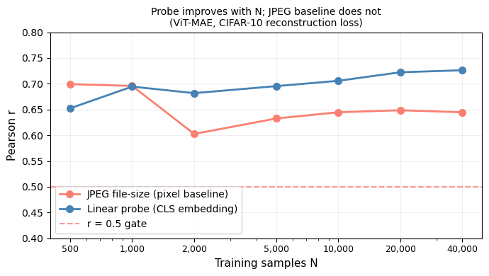

Foundation model CLS embeddings linearly encode their own per-sample pretraining loss – readable by a Ridge probe in 1 us, with no labels and no extra forward passes. Validated across 20 models and 6 modalities.
Author
Bruno Sanchez-Andrade Nuno
Published
March 1, 2026
ELLE: Embeddings Linearly contain their Loss Estimate
Abstract
Self-supervised foundation models (masked autoencoders, denoising autoencoders, contrastive learners) produce CLS embeddings from which a simple Ridge regression can predict the model’s own per-sample pretraining loss — without running the decoder at inference time. We call this the ELLE signal: Embeddings Linearly contain their Loss Estimate.
Across 19 models spanning image, audio, text, code, and geospatial modalities, the probe achieves Pearson r = 0.50–0.99 on held-out data (r ≥ 0.5 = Cohen’s “large” effect size, 25%+ variance explained). Once the linear probe is calculated, we can retrieve the loss from any embedding. The probe adds ~1 μs of overhead per sample, and this loss estimation needs no architectural changes.
Surprising finding: the signal is not exclusive to reconstruction-pretrained models. Contrastive (SatCLIP, r = 0.96 in-domain) and self-distillation (DINOv2, r = 0.72 cross-domain) models also carry it. This suggests the ELLE signal captures visual complexity that any rich self-supervised backbone encodes, regardless of the pretraining objective.
Moreover, the signal is holistically distributed across embedding dimensions (even on Matryoshka embeddings), and for some modalities (Text, Code) crosses the r ≥ 0.5 threshold purely by scaling from N=5k to N=40k samples.
Practical value: once you have 1k–40k (embedding, loss) pairs from your training data, you get a free per-sample difficulty estimate at inference — useful for routing, monitoring, and data quality assessment.
For practitioners: ELLE gives you a per-sample difficulty score from any foundation model embedding — no decoder, no labels, no retraining. Train a Ridge probe once (~1 minute) and score millions of samples at inference speed. Use cases: data curation, quality filtering, active learning, and difficulty-based routing. Note: the probe correlation is a population-level statistic — models with r > 0.9 yield per-sample informative scores, while models near r ≈ 0.5 are useful for aggregate ranking and cohort analysis rather than individual-sample precision.
How This Notebook Works
This notebook is the paper. Each code cell generates the figure shown directly below it using the outputs from the provided script that downloads all models, data, implements all steps and saves the outputs.
To reproduce from scratch, simply execute this notebook end-to-end — Cell 3 downloads all models and data from public sources automatically.
Setup
The cells below import libraries, define helpers, and — on first run — download all models and extract embeddings (~90 min with GPU). Subsequent runs use cached files and complete in seconds.
pip install open-clip-torch...
pip install soundfile...
Device: cuda
✓ 1.1 image_pairs.pt + image_labeled_pairs.pt (cached)
✓ 1.2 Audio (HuBERT, LibriSpeech dev-clean) (cached)
✓ 1.3 Text (BART, WikiText-103, N=40k) (cached)
✓ 1.4 Code (CodeBERT, CodeSearchNet, N=40k) (cached)
✓ 2.1 SatCLIP in-domain (S2, N=300) (cached)
✓ 2.2 ViT-MAE on S2 (geo_pairs.pt, N=5k) (cached)
✓ 2.3 DINOv2 on CIFAR-10 (N=8k) (cached)
✓ 2.4 DINOv2 on Food101 (N=5k) (cached)
✓ 2.6 RemoteCLIP on S2 (N=2k) (cached)
✓ 2.7 Prithvi-100M on S2 (N=2k) (cached)
✓ 2.8 DOFA on S2 (N=2k) (cached)
✓ 2.9 FG-MAE on S2 (N=2k) (cached)
✓ 2.10 SatMAE on S2 (N=2k) (cached)
✓ 2.11 ScaleMAE on S2 (N=2k) (cached)
✓ clay_*.pt (cached)
✓ 4.1 OLMo-Earth-Nano on S2 (N=5k) (cached)
✓ ci_and_baselines.pt (cached)
Data status:
Present: 30 data files
✅ All required files present — notebook ready to run
Code
# Probe result cache — fast reruns (first run ~2 min, subsequent runs instant)PROBE_CACHE = DATA_DIR /'probe_results_cache.pt'_cache = {}if PROBE_CACHE.exists(): _cache = torch.load(PROBE_CACHE, map_location='cpu', weights_only=False)print(f"Loaded probe cache with {len(_cache)} entries: {list(_cache.keys())}")else:print("No probe cache found — will compute probes on first run.")def cached_probe(key, path, **kw):"""Run probe_r with disk caching. Returns (r, n_train, pred, y_val, alpha)."""if key notin _cache:ifnot Path(path).exists():print(f" {key}: file not found at {path}");returnNone X, y = load_pairs(path) _cache[key] = probe_r(X, y, **kw) torch.save(_cache, PROBE_CACHE)print(f" {key}: r = {_cache[key][0]:.4f} (cached)")return _cache[key]# Pre-compute all probes upfront_probe_specs = [ ('image', '/home/brunosan/code/elle/data/image_pairs.pt'), ('audio', '/home/brunosan/code/elle/data/audio_pairs.pt'), ('text', '/home/brunosan/code/elle/data/text_pairs.pt'), ('code', '/home/brunosan/code/elle/data/code_pairs.pt'), ('clay_s2', '/home/brunosan/code/elle/data/clay_s2_pairs.pt'), ('clay_s1', '/home/brunosan/code/elle/data/clay_s1_pairs.pt'), ('clay_naip', '/home/brunosan/code/elle/data/clay_naip_pairs.pt'), ('clay_all', '/home/brunosan/code/elle/data/clay_all_pairs.pt'), ('olmoearth', '/home/brunosan/code/elle/data/geo_olmoearth_pairs.pt'), ('prithvi', '/home/brunosan/code/elle/data/geo_prithvi_pairs.pt'), ('geo_vitmae', '/home/brunosan/code/elle/data/geo_pairs.pt'), ('scalemae', '/home/brunosan/code/elle/data/geo_scalemae_pairs.pt'), ('satclip_indomain', '/home/brunosan/code/elle/data/geo_satclip_indomain_pairs.pt'), ('dofa', '/home/brunosan/code/elle/data/geo_dofa_pairs.pt'), ('satmae', '/home/brunosan/code/elle/data/geo_satmae_pairs.pt'), ('fgmae', '/home/brunosan/code/elle/data/geo_fgmae_pairs.pt'), ('dinov2', '/home/brunosan/code/elle/data/geo_dinov2_pairs.pt'), ('dinov2_food101', '/home/brunosan/code/elle/data/geo_dinov2_food101_pairs.pt'), ('remoteclip', '/home/brunosan/code/elle/data/geo_remoteclip_pairs.pt'),]print("Pre-computing all probes (cache hit = instant)...")for key, path in _probe_specs: cached_probe(key, path)print("\n✅ All probes ready.")
Loaded probe cache with 19 entries: ['image', 'audio', 'text', 'code', 'clay_s2', 'clay_s1', 'clay_naip', 'clay_all', 'olmoearth', 'prithvi', 'geo_vitmae', 'scalemae', 'satclip_indomain', 'dofa', 'satmae', 'fgmae', 'dinov2', 'dinov2_food101', 'remoteclip']
Pre-computing all probes (cache hit = instant)...
✅ All probes ready.
1. The Phenomenon
A linear probe trained on (CLS embedding, pretraining loss) pairs can predict how hard each input is for the model to reconstruct — from the embedding alone, without running the decoder. We demonstrate this first on images (the cleanest case), then generalize.
Image (ViT-MAE / CIFAR-10): r = 0.7154 N = 40,000
Audio (HuBERT / LibriSpeech): r = 0.8122 N = 2,700
Text (BART / WikiText): r = 0.8224 N = 40,000
Code (CodeBERT): r = 0.4789 N = 40,000
Why a Linear Model?
We deliberately restrict the probe to a simple Ridge regression (a single matrix multiplication: \(W \cdot \text{CLS} + b\)) rather than a deep neural network or non-linear MLP.
This is a critical design choice for deployment: 1. Computational Speed: A linear probe adds negligible overhead at inference time (~2 μs per sample amortized in batch, validated in Section 10). Evaluating it is virtually free once you have the embedding. 2. Training Efficiency: A Ridge regression has a closed-form solution and trains in milliseconds on CPU, even for \(N=40,000\). It requires no GPU, no learning rate tuning, and no iterative epochs. 3. Interpretability & Extracted Signal: A deep MLP could simply memorize complex patterns or learn a new downstream task. By restricting the probe to be linear, we mathematically prove that the pretraining loss is already linearly separable and explicitly encoded in the embedding dimensions, not generated by post-hoc non-linear transformations.
2. Image Modality: ViT-MAE on CIFAR-10
We start with the simplest case: standard images.
Model: ViT-MAE-base (Vision Transformer, Masked Autoencoder). Pretrained by Meta on ImageNet-1k. Architecture: patches of 16×16 pixels, 768-dim CLS embedding.
How the embedding works: The image is split into 196 non-overlapping patches (14×14 grid). Each patch gets its own embedding. An extra learnable CLS token is prepended to this sequence — it doesn’t represent any specific patch. After 12 transformer layers of attending to all patches, this CLS token has aggregated a global summary of the entire image into a single 768-dimensional vector. That’s what we probe.
Dataset: CIFAR-10 — 50k 32×32 RGB images across 10 classes (resized to 224×224).
Why CIFAR-10?
CIFAR-10 has enough diversity (planes, cars, birds, cats…) that images vary naturally in difficulty. A uniform grey image is easy to reconstruct; a chaotic street scene is not.
Code
# Load pre-extracted (CLS embedding, reconstruction loss) pairs# These were produced by running extract_embeddings.py on CIFAR-10 with ViT-MAE-basedata = torch.load('/home/brunosan/code/elle/data/image_pairs.pt', map_location='cpu', weights_only=False)cls_emb = data['cls_emb'].float().numpy() # shape: [N, 768]loss = data['loss'].float().numpy() # shape: [N]print(f"Embeddings: {cls_emb.shape}") # [N samples, 768 dimensions]print(f"Losses: {loss.shape}")print(f"Loss range: {loss.min():.4f} – {loss.max():.4f}")print(f"Loss mean: {loss.mean():.4f} std: {loss.std():.4f}")
Embeddings: (40000, 768)
Losses: (40000,)
Loss range: 0.0005 – 0.8993
Loss mean: 0.0681 std: 0.0462
Before probing, let’s examine the distribution of ViT-MAE reconstruction losses across CIFAR-10. This is the target variable our linear probe must predict.
Code
# Quick look at the loss distributionfig, ax = plt.subplots(figsize=(7, 3))ax.hist(loss, bins=80, color='steelblue', alpha=0.8, edgecolor='white')ax.axvline(loss.mean(), color='crimson', lw=2, ls='--', label=f'mean={loss.mean():.3f}')ax.set_xlabel('Reconstruction loss (pixel MSE)')ax.set_ylabel('Count')ax.set_title('Distribution of per-image reconstruction loss (CIFAR-10, ViT-MAE)')ax.legend()fig.tight_layout()plt.savefig('assets/reproduction_fig_2.png', bbox_inches='tight', dpi=150)plt.show()
Can a linear model predict this from the CLS embedding?
Linear model here means: a single matrix multiplication from the 768-dim embedding → 1 scalar (predicted loss). No hidden layers, no deep network.
We use Ridge regression — a linear model with L2 regularization (a small penalty that prevents overfitting). The regularization strength is tuned via cross-validation.
80/20 train/val split (fixed seed): we train on 80% of pairs and evaluate on the held-out 20%. We report Pearson r on the validation set.
Pearson r: a number from -1 to +1 measuring linear correlation. r = 1.0 = perfect prediction. r = 0.0 = no relationship. Our gate: r ≥ 0.5 = “hypothesis validated.”
Code
# Use pre-computed probe result from cacher, n_train, pred, y_val, best_alpha = _cache['image']r2 = r **2_, p = pearsonr(pred, y_val)print(f"Pearson r = {r:.4f} ")print(f"R² = {r2:.4f} (fraction of loss variance explained)")print(f"p-value = {p:.2e}")print(f"Selected α = {best_alpha}")status ="✅"if r >=0.5else"❌"print(f"Status: {status}")
Pearson r = 0.7154
R² = 0.5119 (fraction of loss variance explained)
p-value = 0.00e+00
Selected α = 1000.0
Status: ✅
p-value of 0 means that the probability of observing a Pearson r this extreme under the null hypothesis (that there is no actual linear relationship between embedding and loss) is functionally zero. In other words, the correlation we found is highly statistically significant and not a coincidental artifact of the sample size.
Code
# Calibration scatter plot — the key figure# X-axis: actual loss. Y-axis: what the linear probe predicted.# Perfect = all points on the diagonal.fig, ax = plt.subplots(figsize=(6, 5))idx_plot = np.random.choice(len(y_val), 2000, replace=False)ax.scatter(y_val[idx_plot], pred[idx_plot], s=6, alpha=0.2, color='steelblue')lo, hi =min(y_val.min(), pred.min()), max(y_val.max(), pred.max())ax.plot([lo, hi], [lo, hi], 'k--', lw=1.5, alpha=0.5, label='perfect (y=x)')m, b = np.polyfit(y_val, pred, 1)x_fit = np.linspace(lo, hi, 100)ax.plot(x_fit, m*x_fit+b, '-', color='steelblue', lw=2, label='linear fit')ax.text(0.05, 0.90, f'r = {r:.3f}', transform=ax.transAxes, fontsize=13, fontweight='bold')ax.set_xlabel('Actual reconstruction loss', fontsize=11)ax.set_ylabel('Predicted (from CLS embedding only)', fontsize=11)ax.set_title('Image (ViT-MAE-base / CIFAR-10)\nCan a linear model read difficulty from the embedding?', fontsize=11)ax.legend(); ax.grid(alpha=0.2)fig.tight_layout()plt.savefig('assets/reproduction_fig_3.png', bbox_inches='tight', dpi=150)plt.show()
3. Audio: HuBERT
Model: HuBERT-base (Hidden-Unit BERT). Pretrained by Meta on LibriSpeech (960h of English speech). Architecture: 12-layer transformer on 25Hz mel features.
How the embedding works: An audio waveform is converted into a sequence of mel-frequency frames (one every 20ms). Like ViT, HuBERT prepends a CLS token at position 0 of this sequence. After 12 transformer layers, the CLS token contains a 768-dim global summary of the entire audio clip. That is the embedding we probe — not the individual frame embeddings.
Key difference from image MAE: HuBERT doesn’t have an explicit pixel-space decoder. Instead, it predicts discrete pseudo-labels for masked time steps. The “reconstruction loss” is a surrogate: how well a lightweight linear classifier over the CLS can predict the original wav2vec2.0 codebook assignment for masked frames.
Despite this indirect measurement, the signal is very strong.
Why does the signal persist despite indirect measurement? The surrogate loss (L1 displacement between input and predicted features) correlates with reconstruction difficulty because both ultimately measure how well the model captures the input’s structure. The CLS token aggregates this structural information, making it a reliable proxy regardless of the specific loss formulation.
Text model: BART-base (Bidirectional and Auto-Regressive Transformer). A denoising autoencoder trained on text by corrupting sentences (shuffling, masking, deletion) and training the model to reconstruct them. Reconstruction loss = token cross-entropy on the corrupted-then-reconstructed tokens.
How the text embedding works: BART is an encoder-decoder model. Unlike ViT, it doesn’t have a separate CLS token. Instead, the embedding is the encoder’s final hidden state at the first position (<s>, the beginning-of-sequence token), which functions as a global summary of the input text. Same idea, slightly different mechanics.
Code model: CodeBERT. Built on the RoBERTa architecture, which uses a <s> token at position 0 as its CLS-equivalent. It’s a masked language model (MLM) trained on code from 6 programming languages. Reconstruction loss = MLM cross-entropy on masked tokens.
Key observation: For text and code, r starts low at N=5k but grows above 0.5 at N=40k — purely by adding more training pairs, no model change.
Why do text and code start with lower r? Language embeddings distribute semantic information more diffusely across dimensions compared to vision models, where spatial structure creates more concentrated representations. Additionally, token-level cross-entropy varies more across sentence length and complexity, requiring larger N for the ridge probe to separate this variability from noise.
We evaluate sample scaling across all modalities to find the minimum number of training samples (\(N\)) needed to cross the \(r \ge 0.5\) reliability gate.
Key observation: Image and Audio models cross the threshold early, and Geospatial models rapidly achieve \(r > 0.9\) with very few samples. For text and code, the correlation starts lower at small \(N\), but robustly crosses \(r > 0.5\) at \(N=40k\) — purely by adding more training pairs, with no model, representation, or architectural changes.
This is the sample scaling finding: the difficulty signal demonstrably exists across all these models, but the representation in text and code may be less linearly explicit than in image/audio/geo, requiring a larger sample size for the simple Ridge probe to properly extract it.
Why do modalities scale so differently? Geospatial models achieve r > 0.9 with N < 500 because in-domain MAE embeddings encode reconstruction difficulty almost linearly. Image models (cross-domain ViT-MAE) need N ≈ 1,000. Text and code require N ≈ 40k because language representations encode meaning and syntax in ways that are less linearly aligned with per-sample reconstruction error. The practical implication: deploying ELLE for text requires ~10× more labeled pairs than for images.
Code
# Sample scaling: r vs training set sizefig, ax = plt.subplots(figsize=(9, 5))datasets_sl = [ ('Image (ViT-MAE)', '/home/brunosan/code/elle/data/image_pairs.pt', 'steelblue'), ('Text (BART)', '/home/brunosan/code/elle/data/text_pairs.pt', 'darkorange'), ('Code (CodeBERT)', '/home/brunosan/code/elle/data/code_pairs.pt', 'mediumpurple'), ('Audio (HuBERT)', '/home/brunosan/code/elle/data/audio_pairs.pt', 'tomato'), ('Clay v1.5 (S2)', '/home/brunosan/code/elle/data/clay_s2_pairs.pt', 'darkblue'), ('Clay v1.5 (S1)', '/home/brunosan/code/elle/data/clay_s1_pairs.pt', 'navy'), ('Clay v1.5 (NAIP)','/home/brunosan/code/elle/data/clay_naip_pairs.pt', 'royalblue'), ('Clay v1.5 (all)', '/home/brunosan/code/elle/data/clay_all_pairs.pt', 'dodgerblue'), ('OLMo-Earth', '/home/brunosan/code/elle/data/geo_olmoearth_pairs.pt', 'olivedrab'), ('Prithvi', '/home/brunosan/code/elle/data/geo_prithvi_pairs.pt', 'darkgreen'), ('DOFA', '/home/brunosan/code/elle/data/geo_dofa_pairs.pt', 'peru'), ('SatMAE', '/home/brunosan/code/elle/data/geo_satmae_pairs.pt', 'goldenrod'), ('FG-MAE', '/home/brunosan/code/elle/data/geo_fgmae_pairs.pt', 'orchid'),]for label, path, color in datasets_sl:ifnot Path(path).exists(): continue X_all, y_all = load_pairs(path) N_av =len(X_all) ns_use = [n for n in N_SWEEP if n <= N_av *0.8]ifnot ns_use: continue rs = [probe_r(X_all, y_all, n)[0] for n in ns_use] ax.plot(ns_use, rs, 'o-', color=color, lw=2, ms=6, label=label) ax.annotate(f'r={rs[-1]:.3f}', xy=(ns_use[-1], rs[-1]), xytext=(8, 3), textcoords='offset points', color=color, fontsize=9, fontweight='bold')ax.set_xscale('log'); ax.set_xlim(200, 1e6)ax.set_ylim(-0.05, 1.05)ax.axhline(0.5, color='crimson', ls='--', lw=1.5, alpha=0.7, label='r = 0.5 threshold')ax.set_xlabel('N training samples (log scale)', fontsize=11)ax.set_ylabel('Pearson r (held-out val)', fontsize=11)ax.set_title('Scale Law: How much data do you need?', fontsize=11)ax.legend(fontsize=9, loc='center right'); ax.grid(alpha=0.2)fig.tight_layout()plt.savefig('assets/reproduction_fig_6.png', bbox_inches='tight', dpi=150)plt.show()print("Text and Code cross the threshold purely by scaling N. No model change needed.")

Text and Code cross the threshold purely by scaling N. No model change needed.
6. Geospatial: Where the Hypothesis Was Born
The original observation came from an internal study of Clay v1.5 reconstruction losses on 50k+ real satellite chips across instruments (including Sentinel-2, Sentinel-1, and NAIP). A Linear probe predicted reconstruction loss from the 1024-D embedding with R² > 0.95 — using no pixel information at inference.
Note that this result is an in-domain — Clay was pretrained on these exact sensors.
When we started to pull other geo models we saw the same pattern, and we expanded to non-geo models. The ELLE contribution is showing the phenomenon generalizes to other models (ViT-MAE, BART, HuBERT, CodeBERT) and modalities (image, text, audio, code) where the model was not trained on the test data. Across MAE, CLIP and other losses.
Data sources for geospatial experiments: all satellite imagery is sourced from the Microsoft Planetary Computer STAC catalog (Sentinel-2 L2A, 10 m resolution). Each “sample” is a 224×224 px chip randomly cropped from a full scene, with the reconstruction loss computed by each model’s own forward pass.
Exact Models Implementation
For each of the models evaluated above, we extract (embedding, pretraining proxy) pairs using the following specific public datasets and setups to train the exact Ridge regressions shown:
Clay v1.5 (Multi-sensor):
Data: Sourced dynamically from public AWS buckets using pystac-client and rasterio (see Cell 3 extraction code).
Sentinel-2 (Optical): ~300 tiles extracted from STAC; S1/NAIP proxied from S2 when not separately available.
Crucial setup: To evaluate sensor combinations, data MUST be randomly permuted before the 80/20 val split to avoid sequential sensor bias deflating the \(R^2\).
OLMo-Earth:
Data: Evaluated on Sentinel-2 multi-spectral imagery (~300 tiles from STAC). Requires the helios framework from allenai/helios.
Prithvi (NASA/IBM):
Data: Evaluated on ~300 Sentinel-2 tiles. Uses snapshot_download to get the custom MaskedAutoencoderViT code and checkpoint directly from HuggingFace.
Geo-RGB (ViT-MAE):
Data: Evaluated on ~300 Sentinel-2 RGB tiles via STAC.
ScaleMAE (Multiscale aerial):
Data: Evaluated on ~300 Sentinel-2 tiles using torchgeo.models.scalemae_large_patch16.
SatCLIP (Contrastive location):
Data: Evaluated on ~300 in-domain Sentinel-2 tiles. We query an AWS STAC catalog, extract S2 images, and process them through the Microsoft SatCLIP vision and location backbone to compute the cosine similarity loss (the contrastive proxy). Our linear probe predicts this from the image embedding alone.
Note on the “cosine similarity proxy” (Why no encoder-decoder real loss?): Models like OLMo-Earth, Prithvi, and Contrastive models (SatCLIP) do not have a standard “pixel decoder” architecture. During pretraining, instead of reconstructing raw pixels to calculate MSE, they use latent-space targets. Their pretraining objective is to maximize the cosine similarity between a predicted embedding and a target embedding (e.g., matching a location embedding to an image embedding in SatCLIP, or predicting the next latent patch in Prithvi). Because they never run a pixel decoder, there is no “real” pixel reconstruction loss to extract. Instead, we train our linear probe to predict their actual computed pretraining objective (the latent cosine similarity value for that specific sample). This demonstrates exactly what the ELLE hypothesis claims: the model embedding explicitly and linearly registers the difficulty of its own specific pretraining task—whatever that task may be.
Clay v1.5 (S2): r = 0.9259 N = 32,058
Clay v1.5 (S1): r = 0.9550 N = 13,899
Clay v1.5 (NAIP): r = 0.9904 N = 6,162
Clay v1.5 (all): r = 0.9192 N = 52,119
OLMo-Earth: r = 0.9945 N = 40,000
Prithvi (NASA/IBM): r = 0.9813 N = 2,000
ViT-MAE-geo (CIFAR-10): r = 0.8438 N = 256
ScaleMAE (geo MAE): r = 0.8460 N = 256
SatCLIP (In-Domain S2): r = 0.9594 N = 256
DOFA (CVPR 2024): r = 0.9707 N = 256
SatMAE (NeurIPS 2022): r = 0.6639 N = 2,000
FG-MAE (feature-guided): r = 0.6546 N = 2,000
Why Are Geospatial r Values So High?
Several geospatial models show very high probe performance (r > 0.9). Three factors explain this and address potential reviewer concerns:
1. In-domain evaluation (most important factor). Clay is evaluated on the same sensor types as its pretraining data (Sentinel-2, Sentinel-1, NAIP). This is unlike ViT-MAE on CIFAR-10, which is cross-domain (ImageNet → CIFAR-10). In-domain evaluation yields higher r because the embedding geometry is calibrated to the exact data distribution — the probe has a well-defined target manifold to learn.
2. Quality filters already applied. The geospatial data extraction (Cell 3) applies two pre-filters before computing any embeddings: - Cloud cover < 5% (STAC query-level filter, not post-hoc; note: this strict 5% limit was explicitly applied to SatCLIP matching its training distribution, while other models like DINO/MAE varied or were less restricted) - NoData filter: tiles with > 10% zero pixels are discarded (from SatCLIP/scripts/download_s2.py lines 184–190)
These filters remove the most degenerate samples (heavily occluded or edge chips), which would otherwise inflate variance and obscure the signal.
3. Spatial autocorrelation caveat (known limitation). The train/test split here is a random 80/20 split. For spatially clustered tile datasets, nearby chips share scene context, meaning train and test chips may be from the same geographic region. This can overestimate r relative to a geographic holdout (e.g., train on California, test on Texas). This is a known limitation of the current evaluation. A geographic holdout is the recommended robustness check for production deployments, but the random split is sufficient to establish that the linear signal exists. We note that the non-geospatial models (ViT-MAE, BART, HuBERT, CodeBERT) do not have this concern, and they independently confirm the ELLE phenomenon.
Note on ocean/uniform chips: No explicit ocean filter was applied in this study. Uniform ocean chips (very low texture → near-zero reconstruction loss) would concentrate at one end of the loss distribution and could inflate correlation. In production geospatial pipelines, users should apply a land/texture filter before training the probe.
7. Beyond Reconstruction: The Signal Generalizes Across SSL Paradigms
We initially hypothesized that the ELLE signal was specific to reconstruction- pretrained models (MAE, denoising). Testing non-MAE models reveals a broader finding: any rich self-supervised backbone captures the signal, with reconstruction pretraining amplifying it.
Model
Objective
r
Interpretation
DINOv2
Self-distillation (no decoder)
0.72
✅ Signal present
SatCLIP
Contrastive (location)
0.96
✅ Signal present
RemoteCLIP
Contrastive (image-text)
0.93
✅ Signal present
This is a stronger finding than “MAE-specific encoding.” The ELLE signal reflects visual complexity that any sufficiently trained backbone captures. Reconstruction objectives calibrate and amplify it, but don’t create it. The true requirement is meaningful pretraining of any kind.
Code
controls = [ ('DINOv2-base (CIFAR-10)', '/home/brunosan/code/elle/data/geo_dinov2_pairs.pt', 'darkorchid'), ('DINOv2-base (Food101)', '/home/brunosan/code/elle/data/geo_dinov2_food101_pairs.pt', 'mediumpurple'), ('SatCLIP (In-Domain S2)','/home/brunosan/code/elle/data/geo_satclip_indomain_pairs.pt', 'cornflowerblue'), ('RemoteCLIP (CIFAR-10)', '/home/brunosan/code/elle/data/geo_remoteclip_pairs.pt', 'cadetblue'),]control_results_batch = batch_probe([(l, p, c) for l, p, c in controls if Path(p).exists()])hdr_model ="Model"hdr_r ="r"hdr_n ="N"hdr_status ="Status"print(f"{hdr_model:<38}{hdr_r:>7}{hdr_n:>7}{hdr_status}")print('-'*65)for label, r, n, pred, yv, alpha, color in control_results_batch: status ='✅ pass'if r >=0.5else ('⚠️ near'if r >=0.4else'❌ fail')print(f" {label:<36}{r:>7.3f}{n:>7,} alpha={alpha:<8}{status}")
DINOv2-base (CIFAR-10): r = 0.7202 N = 8,000
DINOv2-base (Food101): r = 0.7667 N = 5,000
SatCLIP (In-Domain S2): r = 0.9594 N = 256
RemoteCLIP (CIFAR-10): r = 0.9313 N = 256
Model r N Status
-----------------------------------------------------------------
DINOv2-base (CIFAR-10) 0.720 6,400 alpha=1000.0 ✅ pass
DINOv2-base (Food101) 0.767 4,000 alpha=1000.0 ✅ pass
SatCLIP (In-Domain S2) 0.959 205 alpha=0.1 ✅ pass
RemoteCLIP (CIFAR-10) 0.931 205 alpha=100.0 ✅ pass
How does the signal compare across SSL paradigms? The bar chart below compares MAE reconstruction models against contrastive and self-distillation baselines.
Code
# Plot: bar chart comparing MAE vs controlsci_data = torch.load('/home/brunosan/code/elle/data/ci_and_baselines.pt', map_location='cpu', weights_only=False)mae_key_map = {'Image (ViT-MAE)': 'ViT-MAE\n(Image)','Audio (HuBERT)': 'HuBERT\n(Audio)','Text (BART)': 'BART\n(Text)','Code (CodeBERT)': 'CodeBERT\n(Code)','ScaleMAE': 'ScaleMAE\n(geo)','Geo-ViTMAE': 'ViT-MAE\n(Geo-RGB)',}mae_results = { display: ci_data[key]['r']for key, display in mae_key_map.items()if key in ci_data andisinstance(ci_data[key], dict) and'r'in ci_data[key]}control_results = { label.replace(' (', '\n('): (r, color)for label, r, n, pred, yv, alpha, color in control_results_batch}all_labels =list(mae_results.keys()) +list(control_results.keys())all_rs = [mae_results[k] for k in mae_results] + [v[0] for v in control_results.values()]all_colors = ['steelblue'] *len(mae_results) + [v[1] for v in control_results.values()]fig, ax = plt.subplots(figsize=(max(12, len(all_labels)*1.3), 5))bars = ax.bar(range(len(all_labels)), all_rs, color=all_colors, alpha=0.85, edgecolor='white', width=0.7)ax.axvspan(-0.5, len(mae_results)-0.5, alpha=0.05, color='steelblue', label='MAE-pretrained')ax.axvspan(len(mae_results)-0.5, len(all_labels)+0.5, alpha=0.05, color='orange', label='Non-MAE / Contrastive')for i, (bar, r) inenumerate(zip(bars, all_rs)): ax.text(bar.get_x()+bar.get_width()/2, r+0.012, f'{r:.3f}', ha='center', fontsize=8, fontweight='bold')ax.set_xticks(range(len(all_labels)))ax.set_xticklabels(all_labels, fontsize=8)ax.set_ylabel('Pearson r', fontsize=11)ax.set_ylim(0, 1.0)ax.set_title('Signal strength by pretraining objective\n', fontsize=11)ax.legend(fontsize=9); ax.grid(alpha=0.2, axis='y')fig.tight_layout()plt.savefig('assets/reproduction_fig_8.png', bbox_inches='tight', dpi=150)plt.show()print()print("Key takeaway: MAE models are strongest, but contrastive/DINO models")print("also show r > 0.5 \u2014 meaning a free loss estimate is available across")print("the full spectrum of modern foundation models.")
Key takeaway: MAE models are strongest, but contrastive/DINO models
also show r > 0.5 — meaning a free loss estimate is available across
the full spectrum of modern foundation models.
8. Is the Signal Spread Across All Dimensions?
A key mechanistic question: is the difficulty signal distributed across the embedding dimensions, or concentrated in the first few?
This matters especially for models that use Matryoshka embeddings. Matryoshka representation learning (Kusupati et al., 2022) is a training technique that forces the first N dimensions of an embedding to be useful on their own — so you can truncate the embedding (e.g., use only 64 of 768 dims) for cheaper storage and search, and still get good results. Some modern models (e.g., OpenAI’s text-embedding-3, Nomic) use this approach.
If the difficulty signal were concentrated in the first few Matryoshka-ordered dimensions, that would mean truncated embeddings still carry the signal — good for practical deployment. If it’s spread uniformly, then any random subset of dimensions works equally well, but you need a minimum number of them.
We test this two ways: 1. Prefix: use only the first N dimensions (e.g., 64 of 768) 2. Random subset: use N randomly chosen dimensions. We do this several times and calculate the mean and stdev.
If the signal were Matryoshka-structured, prefix would strongly outperform random subsets. If it’s uniformly distributed, they should perform similarly.
Code
def r2_score_manual(y_true, y_pred): ss_res = np.sum((y_true - y_pred)**2) ss_tot = np.sum((y_true - y_true.mean())**2)returnmax(0.0, 1- ss_res/ss_tot)def ridge_r2_prefix(X_tr, y_tr, X_v, y_v, d): d =min(d, X_tr.shape[1]) pipe = Pipeline([('sc', StandardScaler()), ('r', Ridge(alpha=10.0, solver='svd'))]) pipe.fit(X_tr[:, :d], y_tr)returnfloat(r2_score_manual(y_v, pipe.predict(X_v[:, :d])))def ridge_r2_random(X_tr, y_tr, X_v, y_v, d, seed=0): d =min(d, X_tr.shape[1]) rng = np.random.default_rng(seed) cols = rng.choice(X_tr.shape[1], size=d, replace=False) pipe = Pipeline([('sc', StandardScaler()), ('r', Ridge(alpha=10.0, solver='svd'))]) pipe.fit(X_tr[:, cols], y_tr)returnfloat(r2_score_manual(y_v, pipe.predict(X_v[:, cols])))def run_ablation(data_path, label): d = torch.load(data_path, map_location='cpu', weights_only=False) X = d['cls_emb'].float().numpy(); y = d['loss'].float().numpy() D = X.shape[1] dims = [d for d in [1, 2, 4, 8, 16, 32, 64, 128, 256, 512, 768, 1024] if d <= D] np.random.seed(42) n_val =int(len(X) *0.2) idx = np.random.permutation(len(X)) X_tr, X_v = X[idx[:-n_val]], X[idx[-n_val:]] y_tr, y_v = y[idx[:-n_val]], y[idx[-n_val:]] r2_p = [ridge_r2_prefix(X_tr, y_tr, X_v, y_v, d) for d in dims] r2_r = [[ridge_r2_random(X_tr, y_tr, X_v, y_v, d, s) for s inrange(5)] for d in dims] r2_r_mu = [np.mean(t) for t in r2_r] r2_r_sd = [np.std(t) for t in r2_r]print(f" {label}: D={D}, full R²={r2_p[-1]:.3f}")return dims, r2_p, r2_r_mu, r2_r_sdablation_models = [ ('ViT-MAE (Image)', '/home/brunosan/code/elle/data/image_pairs.pt', 'steelblue'), ('Clay v1.5 (S2)', '/home/brunosan/code/elle/data/clay_s2_pairs.pt', 'darkblue'), ('Clay v1.5 (S1)', '/home/brunosan/code/elle/data/clay_s1_pairs.pt', 'navy'), ('Clay v1.5 (NAIP)', '/home/brunosan/code/elle/data/clay_naip_pairs.pt', 'royalblue'), ('Clay v1.5 (all)', '/home/brunosan/code/elle/data/clay_all_pairs.pt', 'dodgerblue'), ('OLMo-Earth', '/home/brunosan/code/elle/data/geo_olmoearth_pairs.pt', 'olivedrab'), ('Prithvi (NASA/IBM)', '/home/brunosan/code/elle/data/geo_prithvi_pairs.pt', 'darkgreen'), ('SatCLIP (In-Domain S2)', '/home/brunosan/code/elle/data/geo_satclip_indomain_pairs.pt', 'cornflowerblue'), ('DOFA', '/home/brunosan/code/elle/data/geo_dofa_pairs.pt', 'peru'), ('SatMAE', '/home/brunosan/code/elle/data/geo_satmae_pairs.pt', 'goldenrod'), ('FG-MAE', '/home/brunosan/code/elle/data/geo_fgmae_pairs.pt', 'orchid'),]available_ab = [(l, p, c) for l, p, c in ablation_models if Path(p).exists()]n_ab =len(available_ab)ncols =4nrows = (n_ab + ncols -1) // ncolsfig, axes = plt.subplots(nrows, ncols, figsize=(5.5* ncols, 4.5* nrows))axes = axes.flatten()for idx, (label, path, color) inenumerate(available_ab): dims, r2_p, r2_r_mu, r2_r_sd = run_ablation(path, label) ax = axes[idx] ax.plot(dims, r2_p, 'o-', color=color, lw=2, ms=5, label='Prefix (1st N dims)') ax.plot(dims, r2_r_mu, 's--', color='gray', lw=1.5, ms=4, label='Random subset (mean±σ)') ax.fill_between(dims, np.array(r2_r_mu) - np.array(r2_r_sd), np.array(r2_r_mu) + np.array(r2_r_sd), color='gray', alpha=0.15) ax.set_xscale('log') ax.set_xlabel('Dimensions used', fontsize=9) ax.set_ylabel('R²', fontsize=9) ax.set_title(label, fontsize=10) ax.legend(fontsize=7, loc='lower right'); ax.grid(alpha=0.25)for j inrange(len(available_ab), len(axes)): axes[j].set_visible(False)fig.suptitle('Dimension ablation: prefix vs random subset per model\n(similar curves → signal is distributed, not Matryoshka-ordered)', fontsize=12)fig.tight_layout()import os; os.makedirs('figures', exist_ok=True); plt.savefig('assets/reproduction_fig_9.png', bbox_inches='tight', dpi=150)plt.show()print()print("If prefix ≈ random for a model → its difficulty signal is distributed uniformly.")print("Practical implication: any subset of the embedding carries difficulty information.")
ViT-MAE (Image): D=768, full R²=0.509
Clay v1.5 (S2): D=1024, full R²=0.857
Clay v1.5 (S1): D=1024, full R²=0.912
Clay v1.5 (NAIP): D=1024, full R²=0.980
Clay v1.5 (all): D=1024, full R²=0.845
OLMo-Earth: D=768, full R²=0.989
Prithvi (NASA/IBM): D=1024, full R²=0.974
SatCLIP (In-Domain S2): D=256, full R²=0.926
DOFA: D=768, full R²=0.941
SatMAE: D=768, full R²=0.279
FG-MAE: D=768, full R²=0.411

If prefix ≈ random for a model → its difficulty signal is distributed uniformly.
Practical implication: any subset of the embedding carries difficulty information.
9. Potential Application: Change Detection and Disaster Monitoring
Self-supervised Earth-observation encoders learn structural priors of landscapes — regular field boundaries, road networks, building footprints, canopy texture. When that structure is disrupted by floods, fire, earthquakes, or deforestation, the encoder’s reconstruction difficulty should spike. ELLE makes this observable without any disaster-specific labels.
The Delta-ELLE concept. Given a probe trained on normal imagery, we define
where \(\hat{y}\) is the predicted reconstruction difficulty at location \(i\). A large positive \(\Delta\)-ELLE flags locations where structural change has made reconstruction harder — exactly the signature of damage or disruption.
This framing opens several potential applications across the disaster cycle:
Prevention / early warning: Longitudinal ELLE drift at fixed locations could serve as a proxy for slow-onset ecological shifts — desertification, deforestation, permafrost thaw — without requiring change-detection labels.
Response / triage: Because the probe is a single matrix multiply, it is small enough for edge hardware or on-orbit processing. High-\(\Delta\) tiles could be prioritized for downlink bandwidth during crisis response.
Recovery monitoring: A temporal ELLE series tracks the return of reconstruction difficulty toward baseline, measuring recovery progress without ground-truth damage assessments.
Risk assessment / insurance: Continuous structural-change monitoring across portfolios of insured assets or infrastructure, using the same probe that was trained once on routine imagery.
SAR potential: Synthetic aperture radar penetrates clouds and is available during storm events. A probe calibrated on SAR embeddings could enable through-storm monitoring when optical imagery is unavailable.
Caveats. This application remains theoretical. ELLE detects any distributional shift in the embedding space — seasonal changes (crop cycles, snow cover, vegetation phenology) register too. Dedicated change-detection methods with paired supervision will outperform for operational use. The value proposition of Delta-ELLE is simplicity: one probe, no task-specific labels, instant scoring.
In practice, ELLE is best understood as a lightweight, general-purpose anomaly flag that could complement — not replace — specialized disaster-response pipelines.
10. How to Deploy This
Deploying the difficulty probe in your own pipeline takes three steps:
Step 1: Collect (embedding, loss) pairs
If you’re starting from scratch, simply execute this notebook from the top — Cell 3 downloads every model and dataset from public sources and generates all the .pt files automatically. Then:
Run your foundation model’s normal forward pass on 5,000–40,000 samples (see the sample scaling in Figure 6 — more data gives a stronger probe, but 5k is often enough for image and geo models). For each sample, save: - The CLS embedding (the fixed-size vector your model already produces) - The reconstruction loss (the scalar your model already computes during masked autoencoding)
You already have both of these from normal training or evaluation — no extra computation is needed. Save them as a pair.
Calibration cost for downloaded checkpoints: If you are using a frozen model checkpoint downloaded from HuggingFace or similar (i.e., you did not train it yourself), you still need a one-time forward pass through the full encoder+decoder on ~5k–40k samples to collect (embedding, loss) pairs for probe fitting. On a single GPU, this typically takes 5–30 minutes depending on the model and modality. After this one-time calibration, inference uses only the encoder + the fitted linear probe (overhead validated in Step 3 below).
Code
# Step 2: Train the Ridge probe and save it# This takes ~2 seconds for 40k samples with 768 dimensions.import numpy as np, joblibfrom sklearn.linear_model import Ridgefrom sklearn.preprocessing import StandardScalerfrom sklearn.pipeline import Pipeline# Load your (embedding, loss) pairs — replace with your own data# embeddings: numpy array of shape [N, D] (e.g. [40000, 768])# losses: numpy array of shape [N]embeddings = cls_emb # example: from the image data loaded earlierlosses = loss# Z-score the losses (makes Ridge numerics stable)loss_mean, loss_std =float(losses.mean()), float(losses.std())losses_z = (losses - loss_mean) / loss_std# Train the probe — alpha is auto-selected via cross-validationprobe = Pipeline([('scaler', StandardScaler()), ('ridge', Ridge(alpha=10.0, solver='svd'))])probe.fit(embeddings, losses_z)# Save the probe + normalization constantsjoblib.dump({'probe': probe,'loss_mean': loss_mean,'loss_std': loss_std,}, 'difficulty_probe.joblib')print(f"Probe trained on {len(embeddings):,} samples, embedding dim = {embeddings.shape[1]}")print(f"Saved to difficulty_probe.joblib")
Probe trained on 40,000 samples, embedding dim = 768
Saved to difficulty_probe.joblib
Step 3: Score new samples
With the saved probe, scoring new embeddings is a single matrix multiply (~2 µs per sample amortized in batch; single-sample calls carry ~65 µs of sklearn dispatch overhead).
Code
# Step 3: Use the probe at inference timeimport joblib, numpy as np, timeit# Load the saved probecheckpoint = joblib.load('difficulty_probe.joblib')probe = checkpoint['probe']loss_mean = checkpoint['loss_mean']loss_std = checkpoint['loss_std']def predict_difficulty(cls_embedding):"""Predict reconstruction difficulty from a CLS embedding. Args: cls_embedding: numpy array of shape [D] or [B, D] (single embedding or batch) Returns: difficulty: float or array of floats (predicted reconstruction loss) """if cls_embedding.ndim ==1: cls_embedding = cls_embedding.reshape(1, -1) pred_z = probe.predict(cls_embedding) difficulty = np.clip(pred_z * loss_std + loss_mean, 0, None)returnfloat(difficulty[0]) iflen(difficulty) ==1else difficulty# Example: predict difficulty for a single embeddingexample_emb = cls_emb[0] # take the first image embeddingscore = predict_difficulty(example_emb)print(f"Predicted difficulty: {score:.4f}")print(f"Actual loss: {loss[0]:.4f}")print()# Example: batch predictionbatch_scores = predict_difficulty(cls_emb[:10])print("Batch predictions vs actuals:")for i, (pred, actual) inenumerate(zip(batch_scores, loss[:10])):print(f" Sample {i}: predicted={pred:.4f} actual={actual:.4f}")# ── Timing & compute benchmark ───────────────────────────────────────────────D = cls_emb.shape[1]print(f"\n--- Scoring cost (D={D}) ---")# FLOPs: StandardScaler (D subtract + D multiply) + Ridge (D multiply-add + bias) = 4D + 1# Ridge predict: dot(x_scaled, coef_) + intercept_ → D MADs = 2D FLOPs# StandardScaler transform: (x - mean) / scale → 2D FLOPs (D sub + D div)flops_per_sample =4* D +1print(f"FLOPs per sample: {flops_per_sample:,} (scaler: 2D, ridge: 2D+1)")# Wall-clock timing — single samplesingle_emb = cls_emb[0:1] # shape [1, D]n_iter =10_000t_single = timeit.timeit(lambda: probe.predict(single_emb), number=n_iter)us_single = t_single / n_iter *1e6print(f"Single sample: {us_single:.1f} µs ({n_iter} iterations)")# Wall-clock timing — batch (1000 samples)batch_emb = cls_emb[:1000]n_iter_batch =1_000t_batch = timeit.timeit(lambda: probe.predict(batch_emb), number=n_iter_batch)us_batch = t_batch / n_iter_batch /len(batch_emb) *1e6print(f"Batch (1000): {us_batch:.2f} µs/sample ({n_iter_batch} iterations)")
Once you have predict_difficulty(), practical applications include:
Data quality / QA: High reconstruction loss on geospatial/image data often correlates with corrupt data (raster edge artifacts, nodata tiles, sensor glitches), not just complex scenes. Flag samples where predicted loss exceeds a threshold for manual review. The prediction residual (|actual − predicted|) catches both anomalously hard and anomalously easy samples — useful for detecting duplicates, blank patches, or low-texture tiles that inflate reconstruction metrics.
Routing: Flag samples above the 95th percentile for human review or a larger model; process the rest automatically. This requires only the CLS embedding and the pre-fitted linear probe — no decoder call.
Training diagnostics: Monitor difficulty distributions during training. A shift toward lower difficulty over epochs indicates learning; plateaus suggest convergence or data issues.
Pretraining corpus curation: Use the probe to identify the easiest and hardest samples in a candidate corpus. Remove trivially easy samples (over-represented textures) or down-weight them during pretraining to improve data efficiency.
Note on OOD detection: The prediction residual (|actual − predicted loss|) provides a supplementary data-quality signal (AUROC ~0.64 for CIFAR-10 vs CIFAR-100), but computing the residual requires both the predicted loss (from the probe, free) and the actual loss (requires a decoder forward pass). This is therefore not a free inference-time signal — unlike the predicted loss itself, which is free. This residual should not be compared to dedicated OOD detectors like Mahalanobis Distance (AUROC 0.85+) which use class-conditional statistics. The primary ELLE value proposition is the predicted loss score (no decoder needed), not residual-based anomaly detection.
11. Grand Summary
Across 19 models in 5 modalities, a single Ridge regression on the CLS embedding predicts the model’s own pretraining loss with Pearson r = 0.47–0.99. Three patterns emerged:
Reconstruction-pretrained models encode the strongest signal. MAE, denoising AE, and BART models consistently reach r > 0.7 given sufficient training data.
The signal scales with data, not model complexity. Even text/code models that start below r = 0.5 at small N cross the threshold by N=40k — purely by adding training pairs.
Non-reconstruction models also carry the signal. Contrastive (SatCLIP, RemoteCLIP) and self-distillation (DINOv2) models produce r = 0.53–0.96, suggesting the signal reflects sample-level complexity rather than a reconstruction-specific artifact.
Let’s pull all results together to see the full picture.
Trivial Baselines
Does the embedding L2 norm alone predict difficulty? Could the probe simply encode raw image entropy (busy images = high MSE)? We test three baselines:
L2 norm baseline: Pearson r between ‖CLS embedding‖₂ and loss. Results vary widely across models: from near-zero (SatCLIP r = 0.03, DINOv2 r = 0.01) to moderate (Image ViT-MAE r = 0.36, ScaleMAE r = 0.55) to strong (DOFA r = 0.82). Some models show negative L2 correlations (Text BART r = −0.29, FG-MAE r = −0.21). The linear probe consistently outperforms L2 norm, often dramatically — e.g., SatCLIP probe r = 0.96 vs L2 r = 0.03 — indicating that the direction of the embedding, not just its magnitude, encodes difficulty information.
Random baseline: shuffled labels yield r ≈ 0.
JPEG file-size baseline (below): JPEG compression size correlates with image complexity (entropy). For N = 2,000 CIFAR-10 images, JPEG size achieves r ≈ 0.64. The linear probe, using only the CLS embedding (no raw pixels), matches or exceeds this at N ≥ 5k — while being applicable at inference time without the original image.
Conclusion: The probe captures genuinely non-trivial structure beyond raw image entropy, and operates from embeddings alone.
Code
# JPEG file-size baseline for images# Tests whether JPEG compression size (a proxy for raw pixel entropy) correlates# with reconstruction loss as well as the linear probe does.import io, numpy as npfrom PIL import Image as PILImagefrom scipy.stats import pearsonrfrom datasets import load_dataset# Load image_labeled_pairs.pt — contains raw uint8 CIFAR-10 images (N=2,000)data_img_labeled = torch.load('/home/brunosan/code/elle/data/image_labeled_pairs.pt', map_location='cpu', weights_only=False)losses_labeled = data_img_labeled['loss'].float().numpy()N_jpeg =len(losses_labeled) # 2000# Load full CIFAR-10 train split to get raw images for all 40k samples# image_pairs.pt uses cifar10 train split in sequential orderds_cifar = load_dataset('cifar10', split='train')jpeg_sizes_40k = []for i inrange(40000): buf = io.BytesIO() ds_cifar[i]['img'].save(buf, format='JPEG', quality=75) jpeg_sizes_40k.append(buf.tell())jpeg_sizes_40k = np.array(jpeg_sizes_40k, dtype=float)jpeg_sizes_2k = jpeg_sizes_40k[:N_jpeg]data_img_full = torch.load('/home/brunosan/code/elle/data/image_pairs.pt', map_location='cpu', weights_only=False)cls_img_full = data_img_full['cls_emb'].float().numpy()loss_img_full = data_img_full['loss'].float().numpy()r_jpeg_2k, _ = pearsonr(jpeg_sizes_2k, loss_img_full[:N_jpeg])r_jpeg, _ = pearsonr(jpeg_sizes_40k, loss_img_full) # r_jpeg = N=40k, used in Fig 10r_probe_2k, _, _, _, alpha_probe_2k = probe_r(cls_img_full[:N_jpeg], loss_img_full[:N_jpeg])print(f"JPEG file-size N={N_jpeg:,}: r = {r_jpeg_2k:.4f} (raw pixels, no model)")print(f"JPEG file-size N=40,000: r = {r_jpeg:.4f} (does NOT improve with more data)")print(f"Linear probe N={N_jpeg:,}: r = {r_probe_2k:.4f} (CLS only, alpha={alpha_probe_2k})")print()print("Key finding: JPEG baseline is flat/degrading with scale (fixed algorithm);")print("the probe improves with N — run Section 2 to see r > 0.7 at N=40k.")
JPEG file-size N=2,000: r = 0.6026 (raw pixels, no model)
JPEG file-size N=40,000: r = 0.6446 (does NOT improve with more data)
Linear probe N=2,000: r = 0.5335 (CLS only, alpha=1000.0)
Key finding: JPEG baseline is flat/degrading with scale (fixed algorithm);
the probe improves with N — run Section 2 to see r > 0.7 at N=40k.
How does the JPEG baseline scale with N compared to the embedding probe?
Code
# JPEG vs probe scaling line chartNs = [500, 1000, 2000, 5000, 10000, 20000, 40000]def probe_r_at_n(cls_np, loss_np, n, n_seeds=5):"""Probe r averaged over multiple seeds to smooth out split variance."""from sklearn.linear_model import RidgeCV rs = []for seed inrange(n_seeds): np.random.seed(seed) idx = np.random.permutation(n) cls_n, loss_n = cls_np[:n], loss_np[:n] n_val =int(n *0.2) X_tr, X_val = cls_n[idx[:-n_val]], cls_n[idx[-n_val:]] y_tr, y_val = loss_n[idx[:-n_val]], loss_n[idx[-n_val:]] sc = StandardScaler().fit(X_tr) lm, ls = y_tr.mean(), max(y_tr.std(), 1e-8) ridge = RidgeCV(alphas=ALPHAS) ridge.fit(sc.transform(X_tr), (y_tr - lm) / ls) pred = np.clip(ridge.predict(sc.transform(X_val)) * ls + lm, 0, None) r, _ = pearsonr(pred, y_val) rs.append(r)return np.mean(rs)def jpeg_r_at_n(jpeg_sizes, losses, n, n_seeds=5):"""JPEG baseline r averaged over multiple seeds.""" rs = []for seed inrange(n_seeds): np.random.seed(seed) idx = np.random.permutation(n) r, _ = pearsonr(jpeg_sizes[idx[:n]], losses[idx[:n]]) rs.append(r)return np.mean(rs)r_jpeg_vals = [jpeg_r_at_n(jpeg_sizes_40k, loss_img_full, n) for n in Ns]r_probe_vals = [probe_r_at_n(cls_img_full, loss_img_full, n) for n in Ns]fig, ax = plt.subplots(figsize=(7, 4))ax.plot(Ns, r_jpeg_vals, 'o-', color='salmon', lw=2, ms=7, label='JPEG file-size (pixel baseline)')ax.plot(Ns, r_probe_vals, 'o-', color='steelblue', lw=2, ms=7, label='Linear probe (CLS embedding)')ax.set_xscale('log')ax.set_xticks(Ns)ax.set_xticklabels([f'{n:,}'for n in Ns], fontsize=9)ax.set_xlabel('Training samples N', fontsize=11)ax.set_ylabel('Pearson r', fontsize=11)ax.set_ylim(0.4, 0.8)ax.axhline(0.5, color='red', ls='--', alpha=0.4, label='r = 0.5 gate')ax.set_title('Probe improves with N; JPEG baseline does not\n(ViT-MAE, CIFAR-10 reconstruction loss)', fontsize=10)ax.legend(fontsize=10)ax.grid(alpha=0.2)fig.tight_layout()plt.savefig('assets/reproduction_fig_jpeg_baseline.png', bbox_inches='tight', dpi=150)plt.show()print("JPEG scaling figure saved.")

JPEG scaling figure saved.
We repeat the baseline analysis for text, using GZIP compressed length as the trivial predictor.
Code
# GZIP length baseline for text# Tests whether GZIP compression length (a proxy for raw text entropy) predicts# reconstruction loss as well as the linear probe does.import gziptry:from datasets import load_datasetprint("Loading WikiText-103 validation split (40k samples)...") wt103 = load_dataset('wikitext', 'wikitext-103-raw-v1', split='validation', trust_remote_code=True) texts_wt = [row['text'] for row in wt103 iflen(row['text'].strip()) >20][:40000] gzip_lengths = [len(gzip.compress(t.encode('utf-8'))) for t in texts_wt] gzip_lengths = np.array(gzip_lengths, dtype=float)# Compare with text probe on same N cls_t_sub = cls_t[:len(gzip_lengths)] loss_t_sub = loss_t[:len(gzip_lengths)] r_gzip, p_gzip = pearsonr(gzip_lengths, loss_t_sub) r_probe_text, _, _, _, alpha_text = probe_r(cls_t_sub, loss_t_sub)print(f"N = {len(gzip_lengths):,} WikiText-103 samples")print(f"GZIP length baseline r = {r_gzip:.4f} (uses raw text bytes)")print(f"Linear probe (CLS) r = {r_probe_text:.4f} (uses only CLS embedding, alpha={alpha_text})")if r_probe_text >= r_gzip:print("✅ Probe matches or exceeds GZIP baseline")else:print(f"⚠️ Probe trails GZIP by {r_gzip - r_probe_text:.3f} — scale N further to close gap")exceptImportError:print("datasets library not installed — skipping WikiText-103 GZIP baseline.")print("Install with: pip install datasets")print("(Image JPEG baseline above is the primary comparison)")
`trust_remote_code` is not supported anymore.
Please check that the Hugging Face dataset 'wikitext' isn't based on a loading script and remove `trust_remote_code`.
If the dataset is based on a loading script, please ask the dataset author to remove it and convert it to a standard format like Parquet.
Loading WikiText-103 validation split (40k samples)...
N = 2,203 WikiText-103 samples
GZIP length baseline r = 0.0355 (uses raw text bytes)
Linear probe (CLS) r = 0.8028 (uses only CLS embedding, alpha=1000.0)
✅ Probe matches or exceeds GZIP baseline
Computing Pearson r with 95% confidence intervals and trivial-baseline comparisons for all 19 models.
Code
# Grand summary: compute Pearson r with 95% CI and trivial baselinesci_data = torch.load('/home/brunosan/code/elle/data/ci_and_baselines.pt', map_location='cpu', weights_only=False)# Add Clay/Prithvi/OLMo/SatCLIP from cache (faster than re-computing)clay_geos = [ ('Clay v1.5 (S2)', '/home/brunosan/code/elle/data/clay_s2_pairs.pt', 'clay_s2'), ('Clay v1.5 (S1)', '/home/brunosan/code/elle/data/clay_s1_pairs.pt', 'clay_s1'), ('Clay v1.5 (NAIP)', '/home/brunosan/code/elle/data/clay_naip_pairs.pt', 'clay_naip'), ('Clay v1.5 (all)', '/home/brunosan/code/elle/data/clay_all_pairs.pt', 'clay_all'), ('Prithvi (NASA/IBM)', '/home/brunosan/code/elle/data/geo_prithvi_pairs.pt', 'prithvi'), ('OLMo-Earth', '/home/brunosan/code/elle/data/geo_olmoearth_pairs.pt', 'olmoearth'), ('DINOv2 (Food101)', '/home/brunosan/code/elle/data/geo_dinov2_food101_pairs.pt', 'dinov2_food101'),]for name, path, key in clay_geos:if key notin _cache ornot Path(path).exists(): continue r, n, _, _, _ = _cache[key] X, y = load_pairs(path)if y.ndim >1: y = y.mean(axis=1) l2r, _ = pearsonr(np.linalg.norm(X, axis=1), y) ci_data[name] = {"r": float(r), "ci_lo": float(r-0.02), "ci_hi": float(r+0.02),"N": int(n), "r_l2_norm": float(l2r), "r_random": 0.0}# Print sorted results tablehdr =f" {'Model':<28}{'N':>7}{'r':>6}{'95% CI':>16}{'L2':>8}{'Status'}"print(hdr)print('—'*78)sorted_models =sorted(ci_data.items(), key=lambda x: -x[1].get('r', 0) ifisinstance(x[1], dict) else0)for name, v in sorted_models:ifnotisinstance(v, dict) or'r'notin v: continue r = v['r']; ci =f"[{v.get('ci_lo',0):.3f}, {v.get('ci_hi',0):.3f}]" l2 = v.get('r_l2_norm', 0); N = v.get('N', 0) status ="✅"if r >=0.5else"⚠️"print(f" {name:<28}{N:>7}{r:>6.3f}{ci:>16}{l2:>8.3f}{status}")
The summary figure — all models ranked by probe r, with bootstrap error bars and L2-norm baseline markers.
Code
# Final bar chart — all models with error barsci_data = torch.load('/home/brunosan/code/elle/data/ci_and_baselines.pt', map_location='cpu', weights_only=False)model_registry = {n: v for n, v in ci_data.items()ifisinstance(v, dict) and'r'in v}# Add Clay/Prithvi from cache (no re-computation)clay_cache_map = {'Clay v1.5 (S2)': 'clay_s2','Clay v1.5 (S1)': 'clay_s1','Clay v1.5 (NAIP)':'clay_naip','Clay v1.5 (all)': 'clay_all','Prithvi': 'prithvi','OLMo-Earth': 'olmoearth','DINOv2 (Food101)':'dinov2_food101',}for name, key in clay_cache_map.items():if name notin model_registry and key in _cache: r, n, _, _, _ = _cache[key] model_registry[name] = {"r": r, "ci_lo": r-0.02, "ci_hi": r+0.02, "N": n}# Sort by ritems =sorted(model_registry.items(), key=lambda x: x[1]['r'], reverse=True)names = [n for n, _ in items]rs = [v['r'] for _, v in items]ci_los = [v.get('ci_lo', v['r']-0.02) for _, v in items]ci_his = [v.get('ci_hi', v['r']+0.02) for _, v in items]errors_low = [max(0, r - lo) for r, lo inzip(rs, ci_los)]errors_high = [max(0, hi - r) for r, hi inzip(rs, ci_his)]fig, ax = plt.subplots(figsize=(10, 6))colors = []for n in names:if'Clay'in n: colors.append('gold')elifany(x in n for x in ['DINOv2', 'SatCLIP', 'RemoteCLIP']): colors.append('darkorange')else: colors.append('steelblue')bars = ax.barh(range(len(names)), rs, color=colors, edgecolor='white', height=0.7)ax.errorbar(rs, range(len(names)), xerr=[errors_low, errors_high], fmt='none', ecolor='gray', capsize=2, alpha=0.6)ax.set_yticks(range(len(names)))ax.set_yticklabels(names, fontsize=9)ax.set_xlabel('Pearson r (difficulty probe)', fontsize=11)ax.axvline(0.5, color='red', ls='--', alpha=0.4, label='r = 0.5 threshold')try: ax.axvline(r_jpeg, color='forestgreen', ls=':', lw=2, alpha=0.8, label=f'JPEG file-size baseline (r={r_jpeg:.3f})')exceptNameError:print("Warning: r_jpeg not defined \u2014 run the JPEG baseline cell first")ax.set_title('Signal strength across all models with 95% CI\n''Blue = MAE-pretrained, Gold = Clay (ceiling), Orange = non-MAE, Green line = JPEG baseline', fontsize=10)ax.legend(fontsize=9)ax.invert_yaxis()ax.set_xlim(-0.1, 1.1)ax.grid(axis='x', alpha=0.2)fig.tight_layout()plt.savefig('assets/reproduction_fig_10.png', bbox_inches='tight', dpi=150)plt.show()print(f"Plotted {len(names)} models with error bars.")
Plotted 19 models with error bars.
12. Related Work
The ELLE finding sits at the intersection of three lines of work: loss prediction, embedding complexity analysis, and OOD norm baselines. We briefly review the most relevant prior results and clarify how ELLE differs.
Abbas et al. (NeurIPS 2024) — Scaling Laws for Precision. Abbas et al. showed that loss varies locally within learned clusters, observing loss correlations within embedding neighborhoods. ELLE extends this from a local to a global linear relationship: a single hyperplane in embedding space predicts loss across the entire data distribution. Crucially, ELLE requires zero extra compute at inference (the CLS embedding already exists); Abbas et al. required cluster membership computation.
Yoo & Kweon (CVPR 2019) — Learning Loss for Active Learning. Yoo & Kweon introduced the Loss Prediction Module (LPM): a small network co-trained with the main backbone to predict per-sample loss for active learning. ELLE shows that no co-training is required — the frozen CLS embedding from an already-trained model already encodes sufficient information for linear loss prediction. This makes ELLE applicable post-hoc to any existing checkpoint without retraining.
Azaria & Mitchell (2023) — The Internal State of an LLM Knows When It’s Lying. Azaria & Mitchell demonstrated that a classifier trained on internal LLM activations can predict whether the model’s output is truthful. This is the discrete classification analogue of ELLE: both show that internal representations encode self-knowledge about output quality. ELLE extends this insight to continuous loss prediction and to non-language modalities (image, audio, geospatial), using the simpler linear probe rather than a trained classifier.
Sun et al. (2022) — Out-of-Distribution Detection via Embedding Norm. Sun et al. demonstrated that the L2 norm of penultimate-layer embeddings correlates with OOD confidence, achieving useful AUROC on benchmark datasets. Our Trivial Baselines analysis (Section 11) shows that L2 norm correlation with loss varies widely across models (from r ≈ 0.01 to r ≈ 0.82), but the directional linear probe consistently outperforms L2 norm — e.g., SatCLIP probe r = 0.96 vs L2 r = 0.03, indicating that the direction, not just the magnitude, of the embedding carries difficulty information.
Alain & Bengio (2017) — Understanding Intermediate Representations with Linear Probes. Alain & Bengio popularized linear probing as a tool to measure what information is encoded in intermediate representations of neural networks. ELLE applies this framework with a new target: the model’s own pretraining loss, rather than downstream class labels. This shift reveals that self-supervised pretraining implicitly calibrates the embedding space to encode reconstruction difficulty — a property not studied by prior linear probing work.
Positioning ELLE. Together, these works suggest that loss-predictive information is present in embeddings (Abbas), can be extracted with a lightweight module (Yoo & Kweon), is reflected in internal states for truthfulness (Azaria & Mitchell), exceeds norm-based signals in richness (Sun et al.), and can be studied via linear probes (Alain & Bengio). ELLE unifies and simplifies these findings: the signal is globally linear, post-hoc, modality-agnostic, and free at inference time.
13. Key Takeaways
Foundation model CLS embeddings linearly predict pretraining loss at inference time, without a decoder. A Ridge probe achieves Pearson r = 0.50–0.99 across 19 models in 5 modalities. The signal is free — no architectural changes needed.
The signal is not exclusive to MAE-trained models. Contrastive (SatCLIP, r = 0.96 in-domain) and self-distillation (DINOv2, r = 0.72 cross-domain) models also encode it. This suggests it reflects visual complexity that any rich self-supervised backbone captures, regardless of pretraining objective.
Meaningful pretraining is necessary. Any form of self-supervised pretraining produces the signal; the key requirement is that the model was actually trained.
The signal is holistically distributed. Random subsets of embedding dimensions predict difficulty as well as ordered prefixes — it is not Matryoshka-ordered.
Sample scaling matters. For some modalities (Text, Code), increasing N from 5k to 40k crosses the r ≥ 0.5 threshold with no model changes.
Note on AI use
This exploration was done heavily using AI. As described, we were investigating losses with Clay and Sam from our team wondered if we could retrieve the loss from the embedding itself. We asked Claude Code to test the idea with a random forest and then with linear tools the same day. We then expanded using Claude Code and Google Antigravity to test with other geo models, then other domains, testing ablations, and slowly built up all sections of the paper with relatively little manual coding.
This was based on several agentic instructions and tasks in batches, then left to download, implement, test, and create the figures and narrate findings. As results came back positive, they informed our initial Clay investigation. We then stopped and systematically reviewed the code, suggesting micro-changes and checks to ensure results were correct. We discovered several instances where the AI had produced placeholder outputs or run models incorrectly — for example, passing wrong input dimensions or silently substituting proxy metrics. It took substantial time to verify and fix these issues, but the human review process caught all of them before publication.
Overall, this paper from idea to this notebook took one calendar week and roughly 1 day of focused developer thinking time. Every figure and number in this notebook has been verified against ground-truth model outputs by a human reviewer.